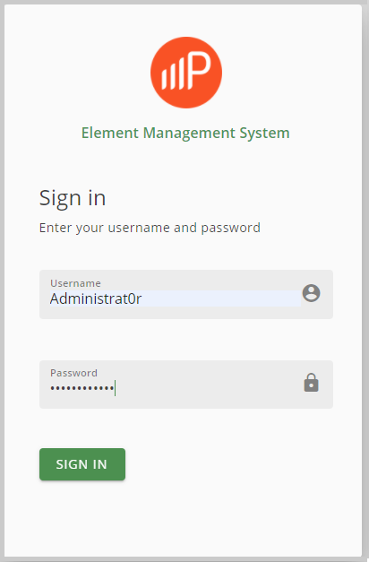

Log Into the PW EMS System as an Administrator user for the first time.
From a client device, launch a Web browser and enter the URL of the PW EMS
system. The following default sign-in screen displays.

Enter the default PW EMS system administrator user credentials in the sign-in
dialog box. The administrator user is a "super administrator" who belongs to the
default organization and has all the privileges necessary to setup the default
organization and its users, and who is enabled to access devices or groups of
devices.
Field
Description
Username
Enter the default user name Administrat0r.
Password
Enter the default password Passw0rd_.
Upon successful login, you are prompted to change the default administrator
password:
If the password conditions are met, the Change Password button is
enabled.
Click Change Password.
Upon successful update and login, the password expiration is
set to its configured value (120 days by default) and the Device Summary window
displays.Refer to Organizations for more information about creating owner organizations, new
organizations, roles for new or existing organizations, editing existing organizations,
user accounts, creating user roles, manipulating permissions by categories, managing
sessions and so on.